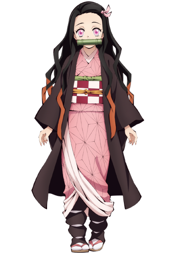
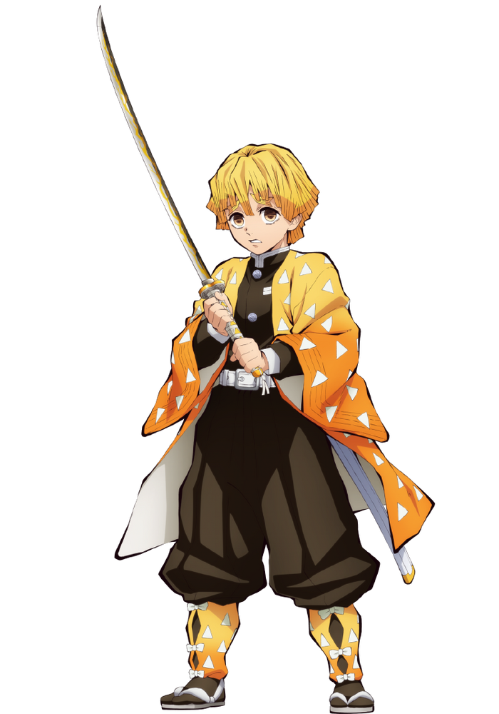
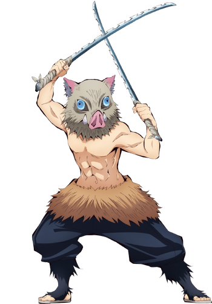
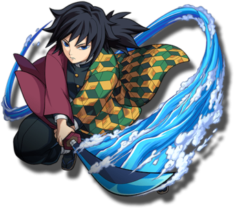

Tanjiro Kamado

Tanjiro Kamado é o protagonista da série. Ele é um jovem gentil e de bom coração que vive com sua mãe e cinco irmãos em uma montanha. Após um trágico evento em que sua família é massacrada por demônios e sua irmã, Nezuko, é transformada em uma, Tanjiro se torna um Caçador de Demônios para vingar sua família e encontrar uma cura para sua irmã. Ele é habilidoso com sua espada e determinado em sua missão.
Nezuko Kamado
Nezuko Kamado é a irmã mais nova de Tanjiro. Ela foi transformada em um demônio após o ataque que matou sua família. No entanto, Nezuko não é uma criatura totalmente malévola e mantém traços humanos. Ela luta para resistir à sede de sangue e proteger seu irmão, mostrando um forte vínculo entre eles. Nezuko é uma personagem cativante e misteriosa.
Zenitsu Agatsuma
Zenitsu Agatsuma é um dos amigos de Tanjiro. Ele é conhecido por ser um covarde e tem um medo extremo de quase tudo. No entanto, quando entra em ação, Zenitsu mostra habilidades impressionantes como espadachim, com reflexos rápidos e grande agilidade. Ele tem um coração bondoso, mas suas inseguranças e medos o tornam um personagem divertido e emocional.
Inosuke Hashibira
Inosuke Hashibira é outro amigo de Tanjiro. Ele é um jovem selvagem que vive em meio à natureza e sempre usa uma máscara de javali. Inosuke é feroz e agressivo, e adora lutar contra demônios com suas duas espadas. Ele é muito competitivo e determinado em suas batalhas. Apesar de sua aparência assustadora, Inosuke tem um coração forte e se importa com seus amigos.
Giyu Tomioka
Giyu Tomioka é um Caçador de Demônios experiente e sério. Ele acolhe Tanjiro como seu aprendiz e o treina para se tornar um Caçador de Demônios hábil. Giyu é calmo, mas implacável em batalha, sendo conhecido por sua habilidade com a respiração da água. Ele é uma figura respeitada entre os Caçadores de Demônios e tem uma presença imponente.